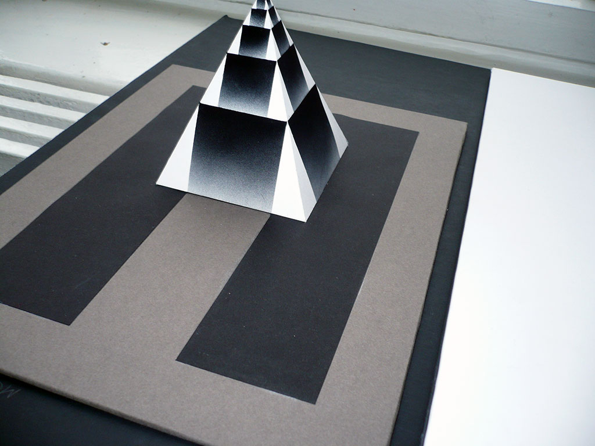
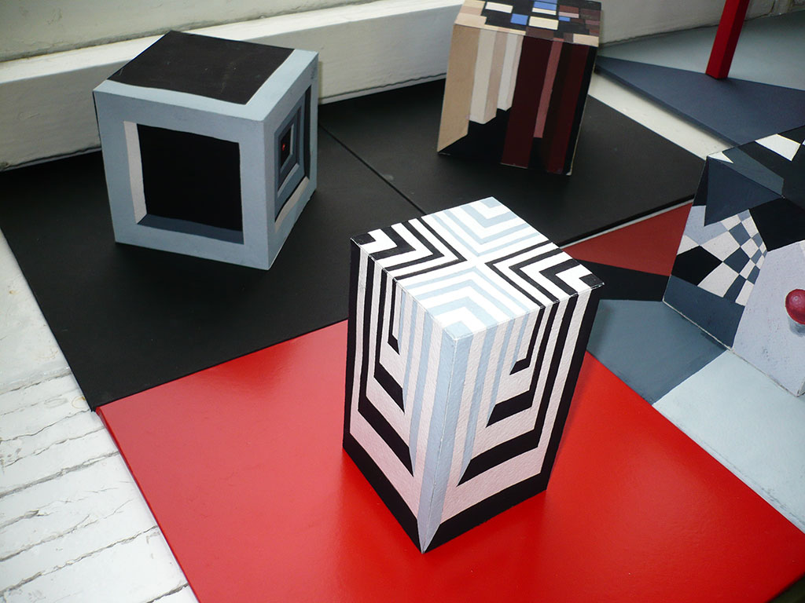
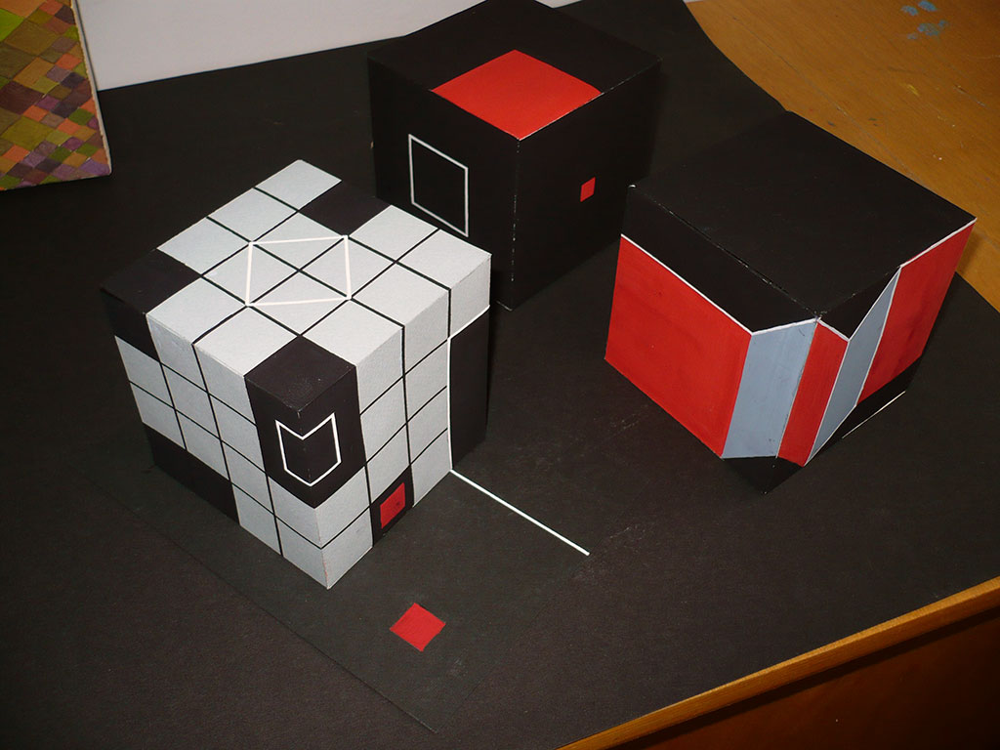
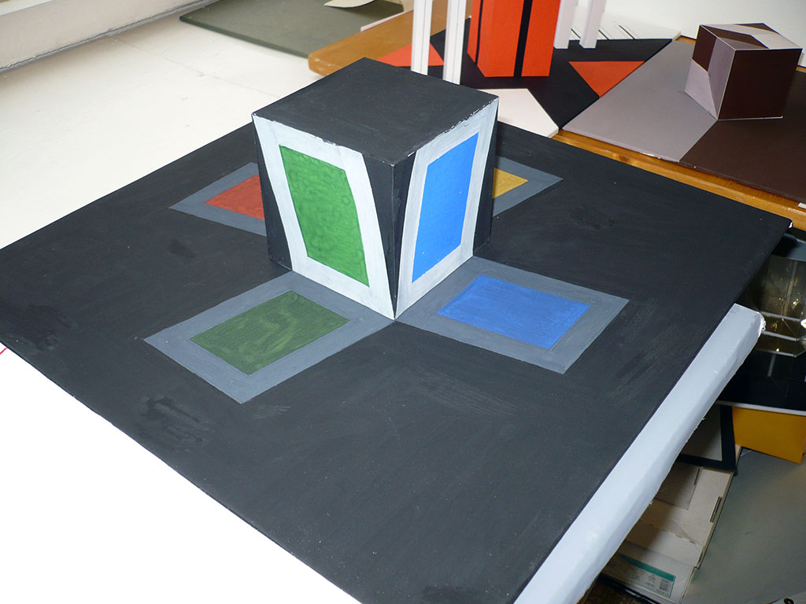
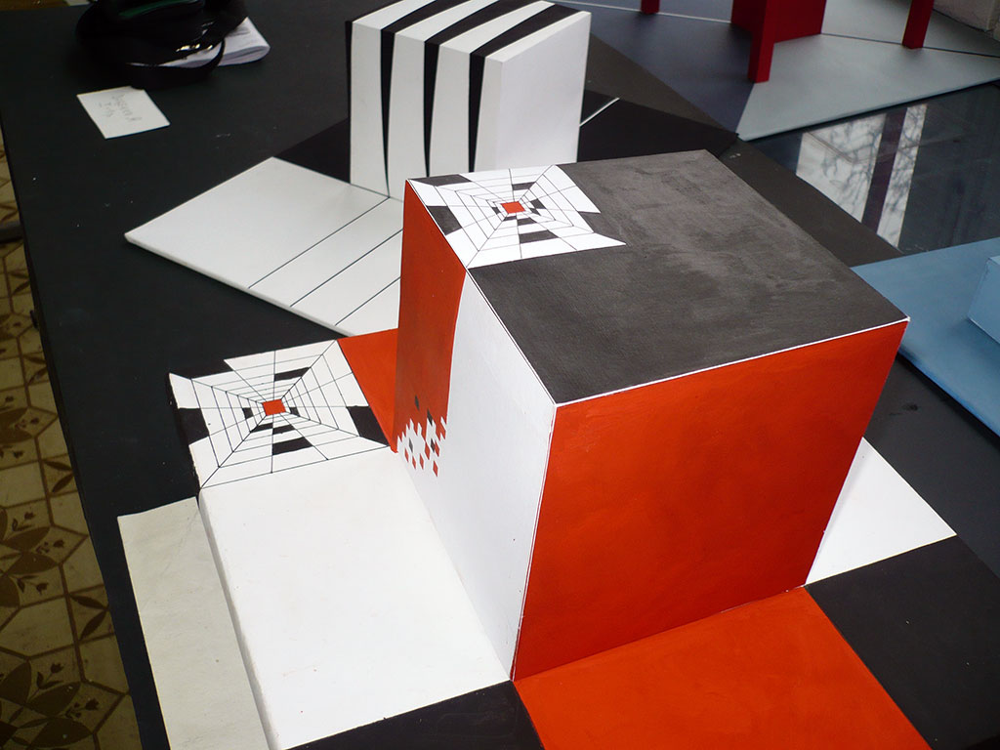

Просмотр зима 2008

Пропорциональный закон пирамиды

Пространственные линии куба

Притчи о кубах

Иллюзия наклона

Развитие пространственного мотива

Форма, пространство и цвет
Просмотр зима 2008